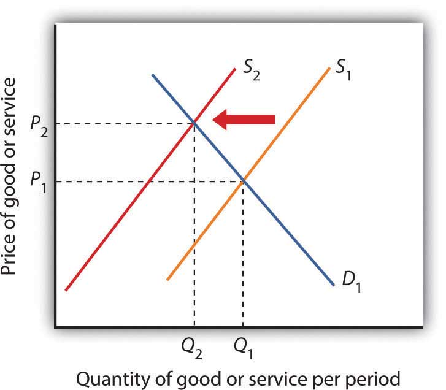

In spite of the strong theoretical case that can be made for free international trade, every country in the world has erected at least some barriers to trade. Trade restrictions are typically undertaken in an effort to protect companies and workers in the home economy from competition by foreign firms. A protectionist policyPolicy that restricts the importation of goods and services produced in foreign countries. is one in which a country restricts the importation of goods and services produced in foreign countries. The slowdown in the U.S. economy late in 2007 and in 2008 has produced a new round of protectionist sentiment—one that became a factor in the 2008 U.S. presidential campaign.
The United States, for example, uses protectionist policies to limit the quantity of foreign-produced sugar coming into the United States. The effect of this policy is to reduce the supply of sugar in the U.S. market and increase the price of sugar in the United States. The 2008 U.S. Farm Bill sweetened things for sugar growers even more. It raised the price they are guaranteed to receive and limited imports of foreign sugar so that American growers will always have at least 85% of the domestic market. The bill for the first time set an income limit—only growers whose incomes fall below $1.5 million per year (for couples) or $750,000 for individuals will receive direct subsidies.“Who Wants to Be a Millionaire?” The Wall Street Journal, May 14, 2008, p. A20.
The U.S. price of sugar is almost triple the world price of sugar, thus reducing the quantity consumed in the United States. The program benefits growers of sugar beets and sugar cane at the expense of consumers.
Figure 17.7 The Impact of Protectionist Policies
Protectionist policies reduce the quantities of foreign goods and services supplied to the country that imposes the restriction. As a result, such policies shift the supply curve to the left for the good or service whose imports are restricted. In the case shown, the supply curve shifts to S2, the equilibrium price rises to P2, and the equilibrium quantity falls to Q2.
In general, protectionist policies imposed for a particular good always reduce its supply, raise its price, and reduce the equilibrium quantity, as shown in Figure 17.7 "The Impact of Protectionist Policies". Protection often takes the form of an import tax or a limit on the amount that can be imported, but it can also come in the form of voluntary export restrictions and other barriers.
A tariffA tax on imported goods and services. is a tax on imported goods and services. The average tariff on dutiable imports in the United States (that is, those imports on which a tariff is imposed) is about 4%. Some imports have much higher tariffs. For example, the U.S. tariff on imported frozen orange juice is 35 cents per gallon (which amounts to about 40% of value). The tariff on imported canned tuna is 35%, and the tariff on imported shoes ranges between 2% and 48%.
A tariff raises the cost of selling imported goods. It thus shifts the supply curve for goods to the left, as in Figure 17.7 "The Impact of Protectionist Policies". The price of the protected good rises and the quantity available to consumers falls.
One of the most common protectionist measures now in use is the antidumping proceeding. A domestic firm, faced with competition by a foreign competitor, files charges with its government that the foreign firm is dumpingThe practice of a foreign firm charging a price in other countries that is below the price it charges in its home country., or charging an “unfair” price. Under rules spelled out in international negotiations that preceded approval of the World Trade Organization, an unfair price was defined as a price below production cost or below the price the foreign firm charges for the same good in its own country. While these definitions may seem straightforward enough, they have proven to be quite troublesome. The definition of “production cost” is a thoroughly arbitrary procedure. In defining cost, the government agency invariably includes a specification of a “normal” profit. That normal profit can be absurdly high. The United States Department of Justice, which is the U.S. agency in charge of determining whether a foreign firm has charged an unfair price, has sometimes defined normal profit rates as exceeding production cost by well over 50%, a rate far higher than exists in most U.S. industry.
The practice of a foreign firm charging a price in the United States that is below the price it charges in its home country is common. The U.S. market may be more competitive, or the foreign firm may simply be trying to make its product attractive to U.S. buyers that are not yet accustomed to its product. In any event, such price discrimination behavior is not unusual and is not necessarily “unfair.”
In the United States, once the Department of Justice has determined that a foreign firm is guilty of charging an unfair price, the U.S. International Trade Commission must determine that the foreign firm has done material harm to the U.S. firm. If a U.S. firm has suffered a reduction in sales and thus in employment it will typically be found to have suffered material harm, and punitive duties will be imposed.
A quotaA direct restriction on the total quantity of a good or service that may be imported during a specified period. is a direct restriction on the total quantity of a good or service that may be imported during a specified period. Quotas restrict total supply and therefore increase the domestic price of the good or service on which they are imposed. Quotas generally specify that an exporting country’s share of a domestic market may not exceed a certain limit.
In some cases, quotas are set to raise the domestic price to a particular level. Congress requires the Department of Agriculture, for example, to impose quotas on imported sugar to keep the wholesale price in the United States above 22 cents per pound. The world price is typically less than 10 cents per pound.
A quota restricting the quantity of a particular good imported into an economy shifts the supply curve to the left, as in Figure 17.7 "The Impact of Protectionist Policies". It raises price and reduces quantity.
An important distinction between quotas and tariffs is that quotas do not increase costs to foreign producers; tariffs do. In the short run, a tariff will reduce the profits of foreign exporters of a good or service. A quota, however, raises price but not costs of production and thus may increase profits. Because the quota imposes a limit on quantity, any profits it creates in other countries will not induce the entry of new firms that ordinarily eliminates profits in perfect competition. By definition, entry of new foreign firms to earn the profits available in the United States is blocked by the quota.
Voluntary export restrictionsA form of trade barrier by which foreign firms agree to limit the quantity of goods exported to a particular country. are a form of trade barrier by which foreign firms agree to limit the quantity of goods exported to a particular country. They became prominent in the United States in the 1980s, when the U.S. government persuaded foreign exporters of automobiles and steel to agree to limit their exports to the United States.
Although such restrictions are called voluntary, they typically are agreed to only after pressure is applied by the country whose industries they protect. The United States, for example, has succeeded in pressuring many other countries to accept quotas limiting their exports of goods ranging from sweaters to steel.
A voluntary export restriction works precisely like an ordinary quota. It raises prices for the domestic product and reduces the quantity consumed of the good or service affected by the quota. It can also increase the profits of the firms that agree to the quota because it raises the price they receive for their products.
In addition to tariffs and quotas, measures such as safety standards, labeling requirements, pollution controls, and quality restrictions all may have the effect of restricting imports.
Many restrictions aimed at protecting consumers in the domestic market create barriers as a purely unintended, and probably desirable, side effect. For example, limitations on insecticide levels in foods are often more stringent in the United States than in other countries. These standards tend to discourage the import of foreign goods, but their primary purpose appears to be to protect consumers from harmful chemicals, not to restrict trade. But other nontariff barriers seem to serve no purpose other than to keep foreign goods out. Tomatoes produced in Mexico, for example, compete with those produced in the United States. But Mexican tomatoes tend to be smaller than U.S. tomatoes. The United States once imposed size restrictions to “protect” U.S. consumers from small tomatoes. The result was a highly effective trade barrier that protected U.S. producers and raised U.S. tomato prices. Those restrictions were abolished under terms of the North American Free Trade Agreement, which has led to a large increase in U.S. imports of Mexican tomatoes and a reduction in U.S. tomato production.Ramon G. Guajardo and Homero A. Elizondo, “North American Tomato Market: A Spatial Equilibrium Perspective,” Applied Economics, 35(3) (February 2003): 315–22.
The conceptual justification for free trade is one of the oldest arguments in economics; there is no disputing the logic of the argument that free trade increases global production, worldwide consumption, and international efficiency. But critics stress that the argument is a theoretical one. In the real world, they say, there are several arguments that can be made to justify protectionist measures.
One argument for trade barriers is that they serve as a kind of buffer to protect fledgling domestic industries. Initially, firms in a new industry may be too small to achieve significant economies of scale and could be clobbered by established firms in other countries. A new domestic industry with potential economies of scale is called an infant industry.A new domestic industry with potential economies of scale.
Consider the situation in which firms in a country are attempting to enter a new industry in which many large firms already exist in the international arena. The foreign firms have taken advantage of economies of scale and have therefore achieved relatively low levels of production costs. New firms, facing low levels of output and higher average costs, may find it difficult to compete. The infant industry argument suggests that by offering protection during an industry’s formative years, a tariff or quota may allow the new industry to develop and prosper.
The infant industry argument played a major role in tariff policy in the early years of U.S. development. The high tariffs of the early nineteenth century were typically justified as being necessary to allow U.S. firms to gain a competitive foothold in the world economy. As domestic industries became established, tariff rates fell. Subsequent increases in tariffs were a response in part to internal crises: the Civil War and the Great Depression. Tariff rates have fallen dramatically since 1930.
Critics of the infant industry argument say that once protection is in place, it may be very difficult to remove. Inefficient firms, they contend, may be able to survive for long periods under the umbrella of infant industry protection.
A new version of the infant industry argument has been used in the past few years as technological developments have spawned whole new industries and transformed existing ones. The new version of the infant industry argument assumes an imperfectly competitive market.
Suppose technological change has given rise to a new industry. Given the economies of scale in this industry, only a few firms are likely to dominate it worldwide—it will likely emerge as an oligopoly. The firms that dominate the industry are likely to earn economic profits that will persist. Furthermore, because there will be only a few firms, they will be located in only a few countries. Their governments could conceivably impose taxes on these firms’ profits that would enhance economic well-being within the country. The potential for such gains may justify government efforts to assist firms seeking to acquire a dominant position in the new industry.
Government aid could take the form of protectionist trade policies aimed at allowing these firms to expand in the face of foreign competition, assistance with research and development efforts, programs to provide workers with special skills needed by the industry, or subsidies in the form of direct payments or special tax treatment. Any such policy aimed at promoting the development of key industries that may increase a country’s domestic well-being through trade with the rest of the world is known as a strategic trade policy.A policy aimed at promoting the development of key industries that may increase a countrys domestic well-being through trade with the rest of the world.
Although strategic trade policy suggests a conceptually positive role for government in international trade, proponents of the approach note that it has dangers. Firms might use the strategic trade argument even if their development were unlikely to offer the gains specified in the theory. The successful application of the approach requires that the government correctly identify industries in which a country can, in fact, gain dominance—something that may not be possible. Various European governments provided subsidies to firms that were involved in the production of Airbus, which is now a major competitor in the airplane industry. On the other hand, Britain and France subsidized the development of the supersonic plane called the Concorde. After only a few Concordes had been produced, it became obvious that the aircraft was a financially losing proposition and production was halted. The airline has now gone out of business.
Finally, those firms whose success strategic trade policy promotes might have sufficient political clout to block the taxes that would redistribute the gains of the policies to the population in general. Thus, the promise of strategic trade policy is unlikely to be fulfilled.
It is sometimes argued that the security of the United States would be threatened if this country depended on foreign powers as the primary source of strategic materials. In time of war, the United States might be cut off from sources of foreign supply and lose some of the materials upon which U.S. industry depends.
One area where the national security argument is applied is the oil industry. Given the volatility of the political situation in the Middle East, some people say, the United States should protect the domestic oil industry in order to ensure adequate production capability in the event Middle Eastern supplies are cut off.
An alternative to tariff protection of strategic commodities is to stockpile those commodities for use in time of crisis. For example, the United States maintains a strategic petroleum reserve for use in case of a cutoff in foreign supplies or domestic crises. For example, strategic oil reserves were tapped in the wake of pipeline and refinery disruptions following Hurricane Katrina in 2005.
The desire to maintain existing jobs threatened by foreign competition is probably the single most important source of today’s protectionist policies. Some industries that at one time had a comparative advantage are no longer among the world’s lowest-cost producers; they struggle to stay afloat. Cost cutting leads to layoffs, and layoffs lead to demands for protection.
The model of international trade in perfect competition suggests that trade will threaten some industries. As countries specialize in activities in which they have a comparative advantage, sectors in which they do not have this advantage will shrink. Maintaining those sectors through trade barriers blocks a nation from enjoying the gains possible from free trade.
A further difficulty with the use of trade barriers to shore up employment in a particular sector is that it can be an enormously expensive strategy. Suppose enough of a foreign good is kept out of the United States to save one U.S. job. That shifts the supply curve slightly to the left, raising prices for U.S. consumers and reducing their consumer surplus. The loss to consumers is the cost per job saved. Estimates of the cost of saving one job in the steel industry through restrictions on steel imports, for example, go as high as $800,000 per year.
One reason often given for the perceived need to protect American workers against free international trade is that workers must be protected against cheap foreign labor. This is an extension of the job protection argument in the previous section. From a theoretical point of view, of course, if foreign countries can produce a good at lower cost than we can, it is in our collective interest to obtain it from them. But workers counter by saying that the low wages of foreign workers means that foreign workers are exploited. To compete with foreign workers, American workers would have to submit themselves to similar exploitation. This objection, however, fails to recognize that differences in wage rates generally reflect differences in worker productivity.
Consider the following example: Suppose U.S. workers in the tool industry earn $20 per hour while Indonesian workers in the tool industry earn only $2 per hour. If we assume that the tool industry is competitive, then the wages in both countries are based on the marginal revenue product of the workers. The higher wage of U.S. workers must mean that they have a higher marginal product—they are more productive. The higher wage of U.S. workers need not mean that labor costs are higher in the United States than in Indonesia.
Further, we have seen that what matters for trade is comparative advantage, not comparative labor costs. When each nation specializes in goods and services in which it has a comparative advantage—measured in the amounts of other goods and services given up to produce them—then world production, and therefore world consumption, rises. By definition, each nation will have a comparative advantage in something.
A particularly controversial issue in industrialized economies is outsourcingSituation in which firms in a developed country transfer some of their activities abroad in order to take advantage of lower labor costs in other countries., in which firms in a developed country transfer some of their activities abroad in order to take advantage of lower labor costs in other countries. Generally speaking, the practice of outsourcing tends to reduce costs for the firms that do it. These firms often expand production and increase domestic employment, as is discussed in the accompanying Case in Point essay.
Another justification for protectionist measures is that free trade is unfair if it pits domestic firms against foreign rivals who do not have to adhere to the same regulatory standards. In the debate over NAFTA, for example, critics warned that Mexican firms, facing relatively lax pollution control standards, would have an unfair advantage over U.S. firms if restraints on trade between the two countries were removed.
Economic theory suggests, however, that differences in pollution-control policies can be an important source of comparative advantage. In general, the demand for environmental quality is positively related to income. People in higher-income countries demand higher environmental quality than do people in lower-income countries. That means that pollution has a lower cost in poorer than in richer countries. If an industry generates a great deal of pollution, it may be more efficient to locate it in a poor country than in a rich country. In effect, a poor country’s lower demand for environmental quality gives it a comparative advantage in production of goods that generate a great deal of pollution.
Provided the benefits of pollution exceed the costs in the poor country, with the costs computed based on the preferences and incomes of people in that country, it makes sense for more of the good to be produced in the poor country and less in the rich country. Such an allocation leaves people in both countries better off than they would be otherwise. Then, as freer trade leads to higher incomes in the poorer countries, people there will also demand improvements in environmental quality.
Do economists support any restriction on free international trade? Nearly all economists would say no. The gains from trade are so large, and the cost of restraining it so high, that it is hard to find any satisfactory reason to limit trade.
Suppose the United States imposes a quota reducing its imports of shoes by one-half (roughly 85–90% of the shoes now sold in the United States are imported). Assume that shoes are produced under conditions of perfect competition and that the equilibrium price of shoes is now $50 per pair. Illustrate and explain how this quota will affect the price and output of shoes in the United States.
The phenomenon of outsourcing has become common as the Internet and other innovations in communication have made it easier for firms to transfer aspects of their production overseas. At the same time, countries such as India and China have invested heavily in education and have produced a sizable workforce of professional people capable of filling relatively high level positions for firms in more developed countries.
The very idea of outsourcing rankles politicians on the left and on the right. In the United States, there have been numerous congressional hearings on outsourcing and proposals to block firms that engage in the practice from getting government contracts.
By outsourcing, firms are able to reduce their production costs. As we have seen, a reduction in production costs translates into increased output and falling prices. From a consumer’s point of view, then, outsourcing should be a very good thing. The worry many commentators express, however, is that outsourcing will decimate employment in the United States, particularly among high-level professionals. Matthew J. Slaughter, an economist at Dartmouth University, examined employment trends from 1991 to 2001 among multinational U.S. firms that had outsourced jobs. Those firms outsourced 2.8 million jobs during the period.
Were the 2.8 million jobs simply lost? Mr. Slaughter points out that there are three reasons to expect that the firms that reduced production costs by outsourcing would actually increase their domestic employment. First, by lowering cost, firms are likely to expand the quantity they produce. The foreign workers who were hired, who Mr. Slaughter refers to as “affiliate workers,” appeared to be complements to American workers rather than substitutes. If they are complements rather than substitutes, then outsourcing could lead to increased employment in the country that does the outsourcing.
A second reason outsourcing could increase employment is that by lowering production cost, firms that increase the scale of their operations through outsourcing need more domestic workers to sell the increased output, to coordinate its distribution, and to develop the infrastructure to handle all those goods.
Finally, firms that engage in outsourcing are also likely to increase the scope of their operations. They will need to hire additional people to explore other product development, to engage in research, and to seek out new markets for the firm’s output.
Thus, Mr. Slaughter argues that outsourcing may lead to increased employment because domestic workers are complements to foreign workers, because outsourcing expands the scale of a firm’s operations, and because it expands the scope of operations. What did the evidence show? Remember the 2.8 million jobs that multinational firms based in the United States outsourced between 1991 and 2001? Employment at those same U.S. firms increased by 5.5 million jobs during the period. Thus, with the phenomena of complementarity, increases in scale, and increases of scope, each job outsourced led to almost two additional jobs in the United States.
The experience of two quite dissimilar firms illustrates the phenomenon. Walmart began expanding its operations internationally in about 1990. Today, it manages its global operations from its headquarters in Bentonville, Arkansas where it employs 15,000 people. Roughly 1,500 of these people coordinate the flow of goods among Walmart’s stores throughout the world. Those 1,500 jobs would not exist were it not for globalization. Xilinx, the high technology research and development firm, generates sales of about $1.5 billion per year. Sixty-five percent of its sales are generated outside the United States. But 80% of its employees are in the United States.
Outsourcing, then, generates jobs. It does not destroy them. Mr. Slaughter concludes: “Instead of lamenting ongoing foreign expansion of U.S. multinationals, if history is our guide then we should be encouraging it.”
Mr. Slaughter and coresearcher Robert Kimmitt make a similar case for insourcing, production, and jobs generated by multinationals based outside the United States that build plants inside the United States. In 2007, these companies employed almost 2 million Americans with average compensation of nearly $80,000. Contrary to popular belief, the unionization rates of the United States affiliates of these companies were about 50% higher than for the rest of the U.S. private sector.
Source: Matthew J. Slaughter, “Globalization and Employment by U.S. Multinationals: A Framework and Facts,” Daily Tax Report (March 26, 2004): 1–12; Robert M. Kimmitt and Matthew J. Slaughter, “How to Jump-Start American Manufacturing,” The Washington Post, A17, August 13, 2010.
The quota shifts the supply curve to the left, increasing the price of shoes in the United States and reducing the equilibrium quantity. In the case shown, the price rises to $68. Because you are not given the precise positions of the demand and supply curves, you can only conclude that price rises; your graph may suggest a different price. The important thing is that the new price is greater than $50.